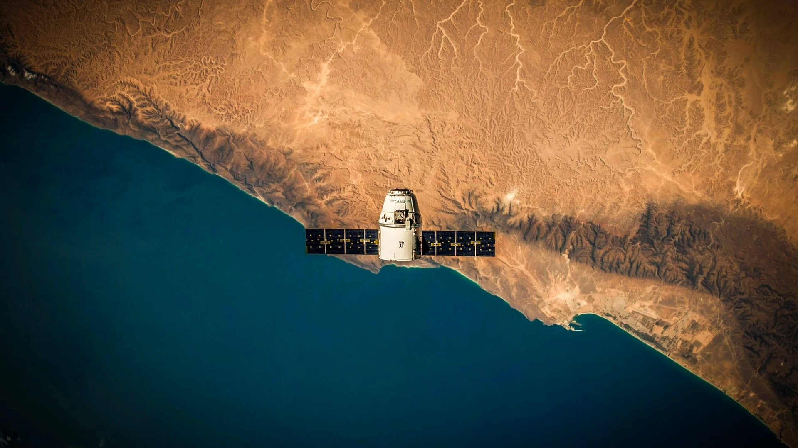
Inteligencia climática, análisis satelital y tecnología avanzada para la gestión inteligente de explotaciones agrícolas.

Arcadia es una empresa especializada en soluciones tecnológicas para el sector agrícola y vitivinícola. Nuestro objetivo es ayudar a las explotaciones a tomar decisiones más precisas mediante el uso de datos climáticos, análisis satelital e inteligencia artificial.
Desarrollamos herramientas que permiten monitorizar el estado de los cultivos en tiempo real, anticipar riesgos climáticos y optimizar el manejo agronómico, contribuyendo a mejorar la eficiencia productiva y la sostenibilidad.
PRIMEROS PASOS
Realizamos un profundo estudio de mercado sobre el estado del sector agronómico en términos tecnológicos y de las necesidades inmediatas para darnos cuenta de que hay mucho camino por recorrer. En este momento tomamos la decisión de elaborar un disruptivo plan de negocio pensando en la mejor manera de captar datos masivos para ofrecer soluciones únicas y diferentes.
SE FUNDA LA EMPRESA PRECURSORA DE ARCADIA
Se inicia el camino en el sector Agro Tech de la mano de Horus, siendo pioneros en el uso de drones para extraer datos de los campos agrícolas. La base de la empresa se sitúa en La Rioja y nos consolidamos como expertos en el sector del vino.
PRIMERA RONDA DE INVERSIÓN
Se logra una ampliación de capital de 150.000 € a través de Horus. Se consolida la marca y nuestra presencia en las comunidades de La Rioja, Navarra y País Vasco.
Aumentamos considerablemente el volumen de clientes y la superficie de viñedo controlada. Primer acuerdo de colaboración con Auravant.
NACE ARCADIA
Nace la empresa que cambiará la forma de entender la Agricultura: Arcadia. Dejamos atrás el modelo de negocio de Horus para ser una empresa de referencia desarrollando soluciones inteligentes y avanzadas para el sector Agro Tech.
ALIANZAS ESTRATÉGICAS
Arcadia logra formar un equipo multidisciplinar de ingenieros altamente cualificados con amplia experiencia en Inteligencia Artificial.
Se cierran acuerdos estratégicos para acelerar el desarrollo de nuestra tecnología.
AVANZAMOS CON PASO FIRME
Cerramos dos grandes proyectos: CarbonSeq para la fijación de carbono en suelo en colaboración con la Unión de Agricultores y Ganaderos de Navarra y el Gobierno de Navarra.
Además lideramos un proyecto en la Denominación de Origen Penedés para contribuir a la transformación digital del viñedo.
Nuestra tecnología ya se utiliza en diferentes regiones vitivinícolas, ayudando a productores y denominaciones de origen a mejorar la gestión del viñedo mediante herramientas digitales avanzadas.
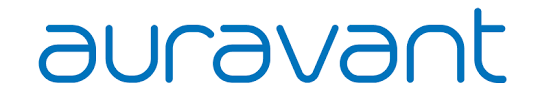
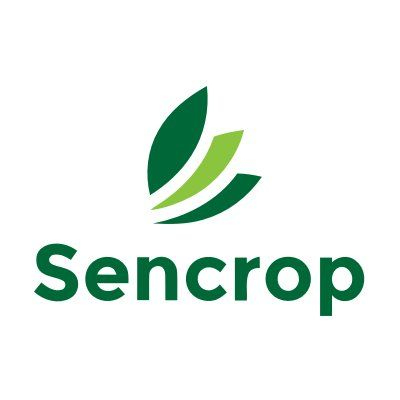
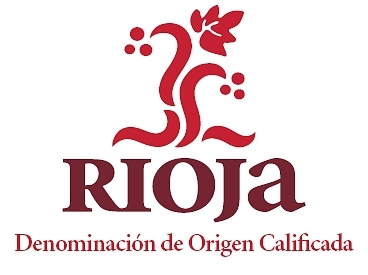
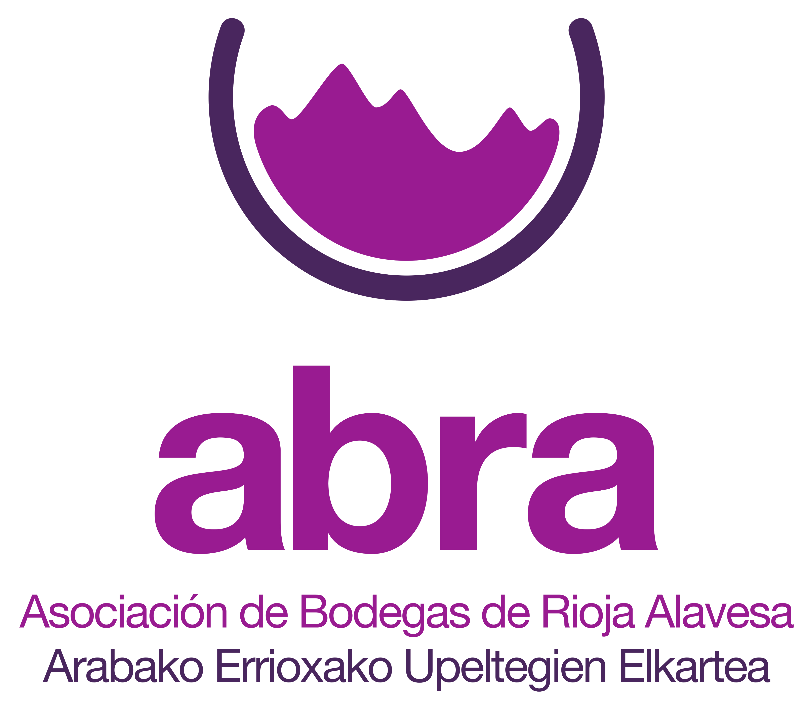
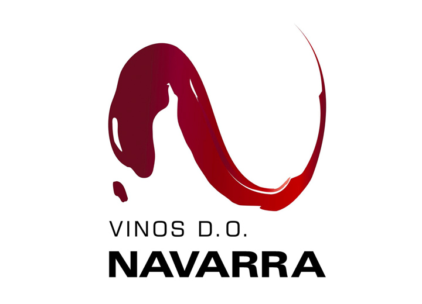
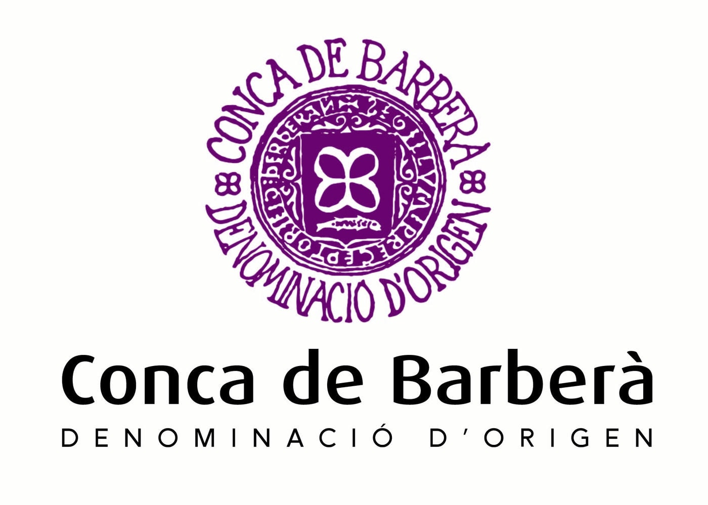
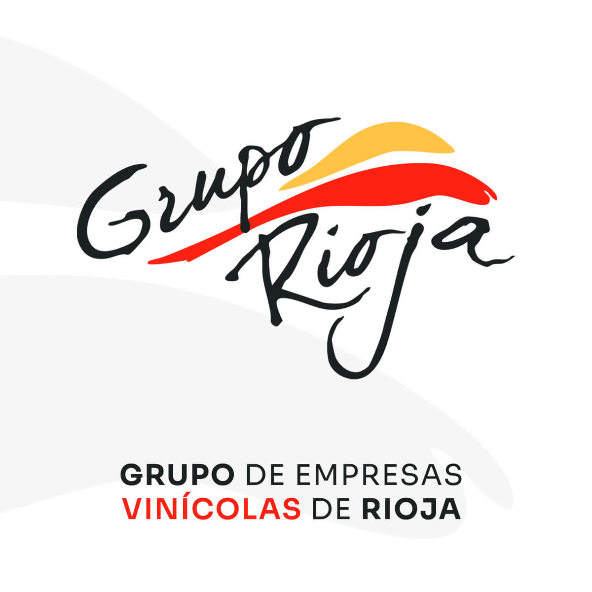
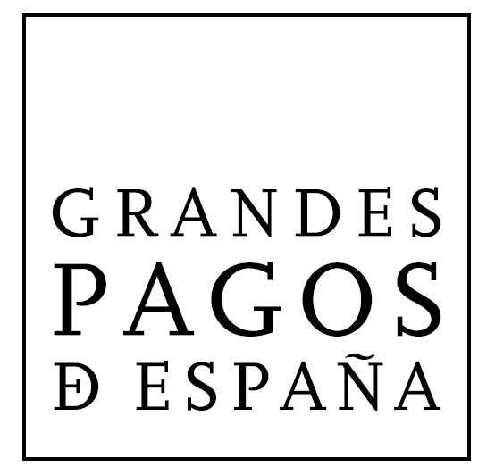
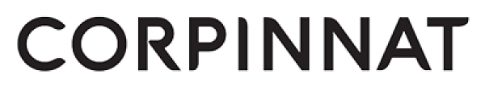
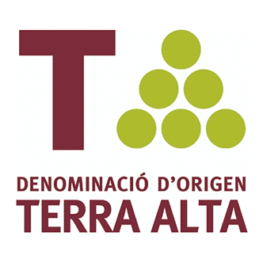
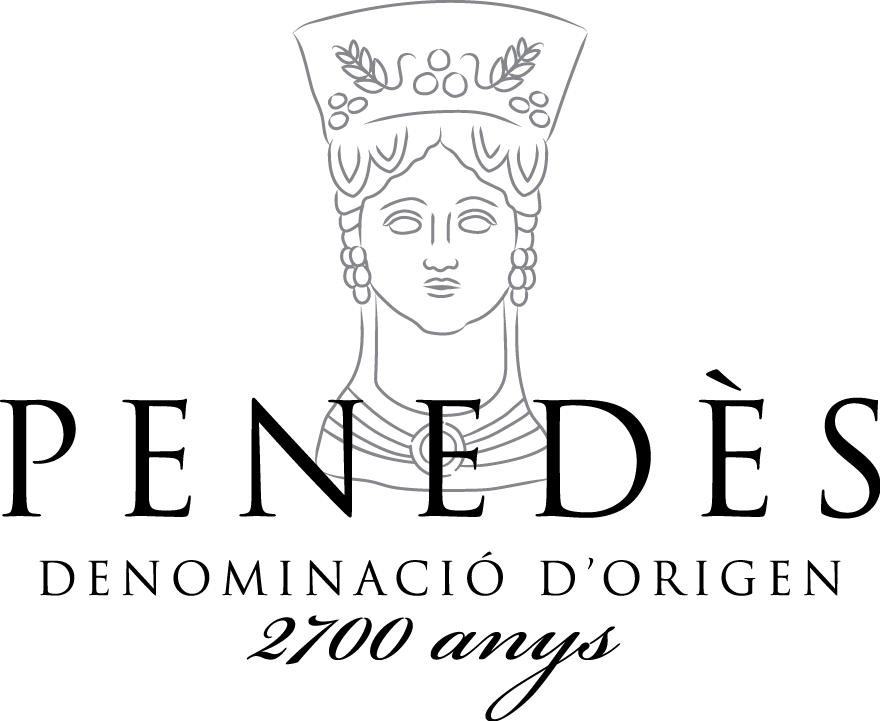
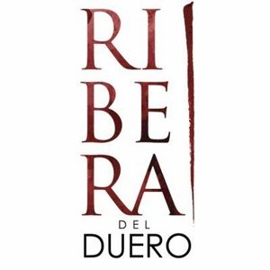
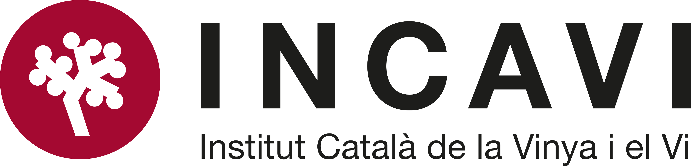
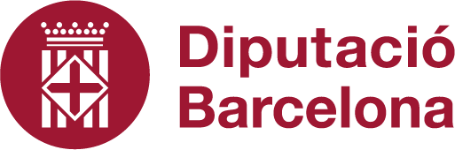
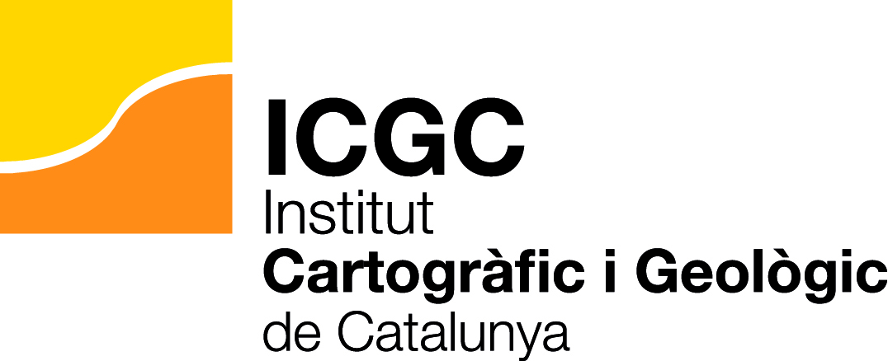
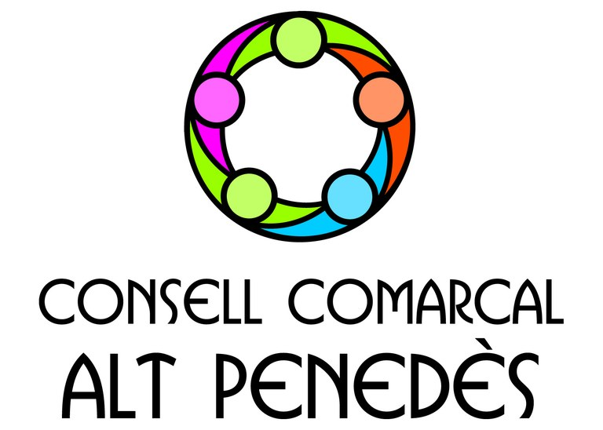
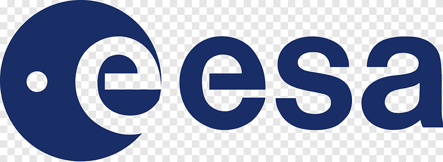
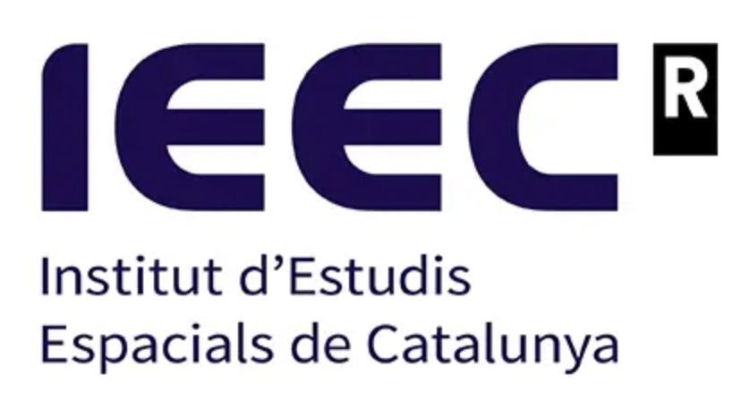
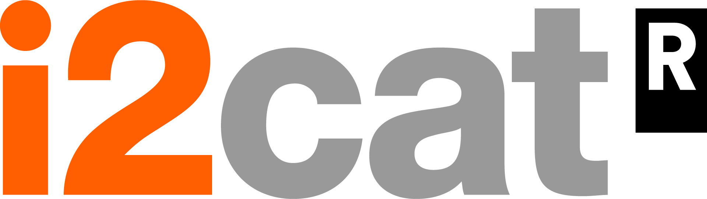
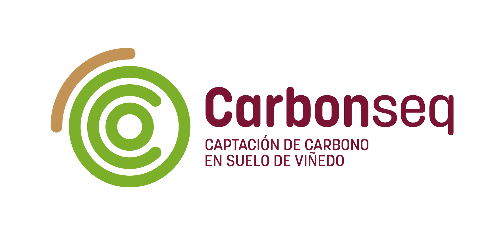
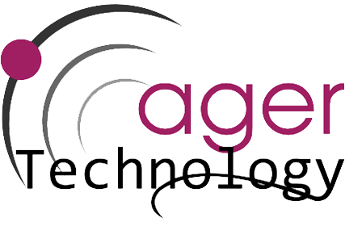
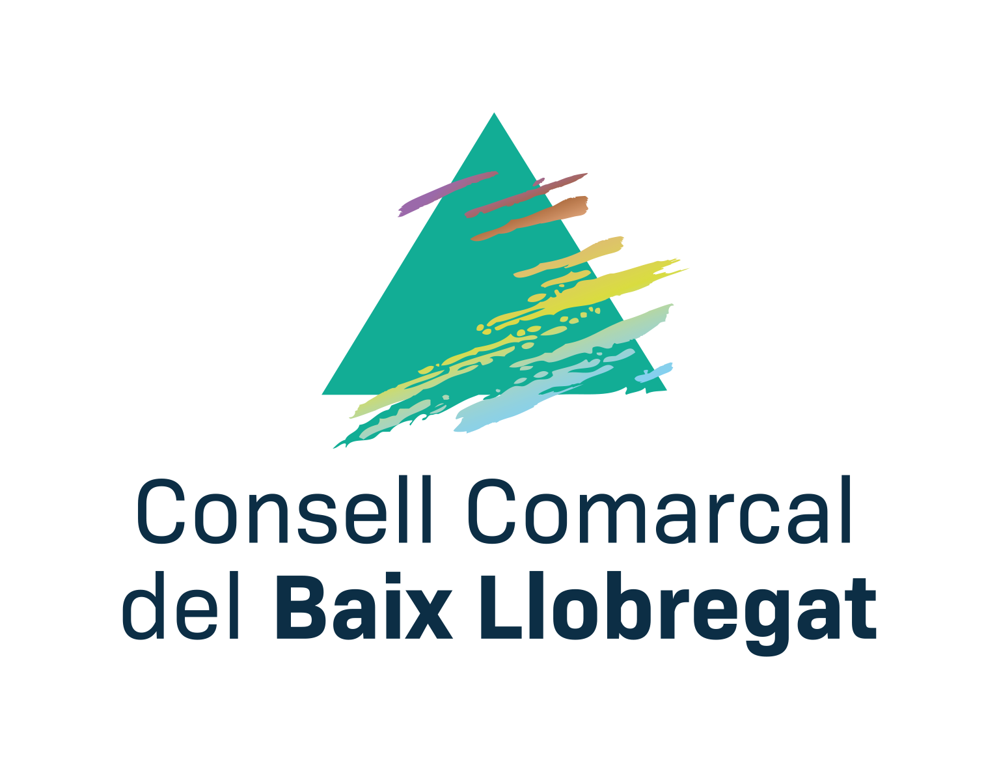
Si quieres descubrir cómo nuestra tecnología puede ayudarte a optimizar la gestión de tus explotaciones agrícolas, puedes explorar nuestra propuesta de valor o volver a la página principal.